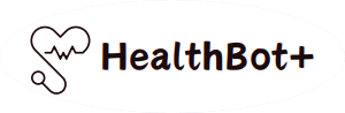
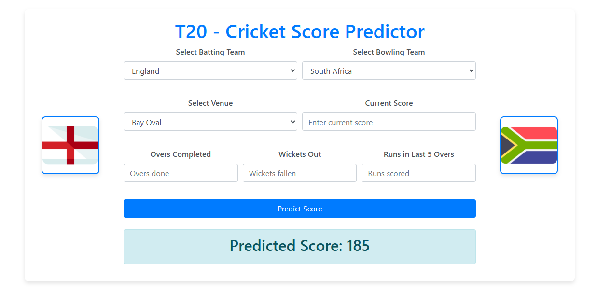

HealthBot+
Timeframe: June 2024 – Present
Tech Stack: Python, HuggingFace, React, Flask
Currently developing HealthBot+, an AI-powered web app for early detection and management of skin diseases.
View on GitHub
ML Olympiad - Sustainable Urban Living
Timeframe: July 2024 – Aug 2024
Tech Stack: Python, Flask, HTML, CSS
Developed a machine learning model to predict habitability scores of properties, securing 3rd place in the Kaggle competition.
View on GitHub
Automatic Number Plate Recognition
Timeframe: June 2024
Tech Stack: Python, OpenCV, Ultralytics, YOLOv8
Implemented an ANPR system to detect and read license plates in video files, visualizing results with bounding boxes.
View on GitHub

T20-Cricket Score Predictor
Timeframe: July 2024 – Present
Tech Stack: Python, Flask, HTML, CSS
Created a web-based ML model to predict final T20 cricket match scores based on current match data.
View on GitHub